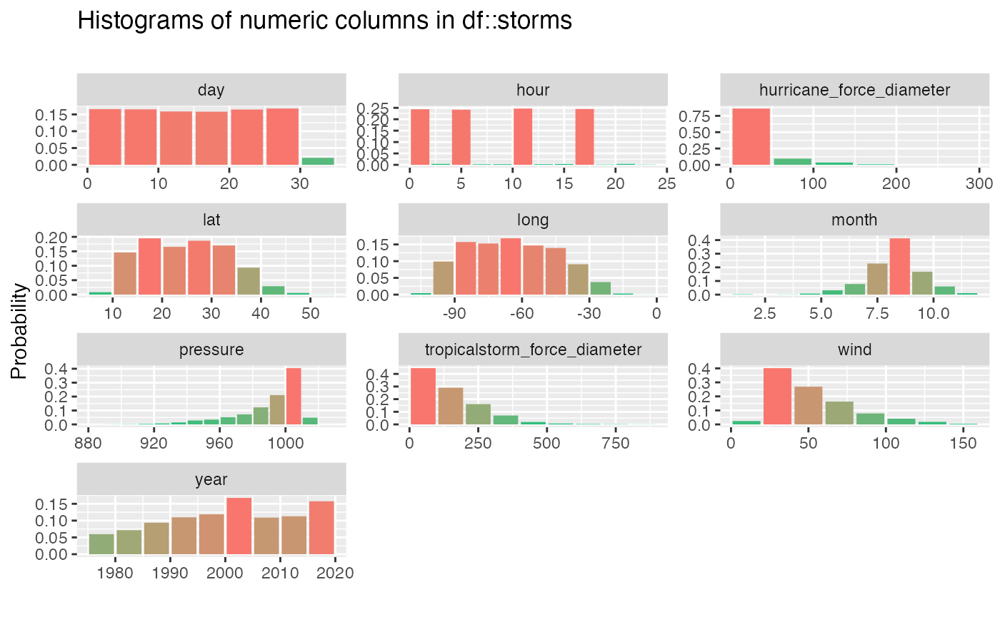
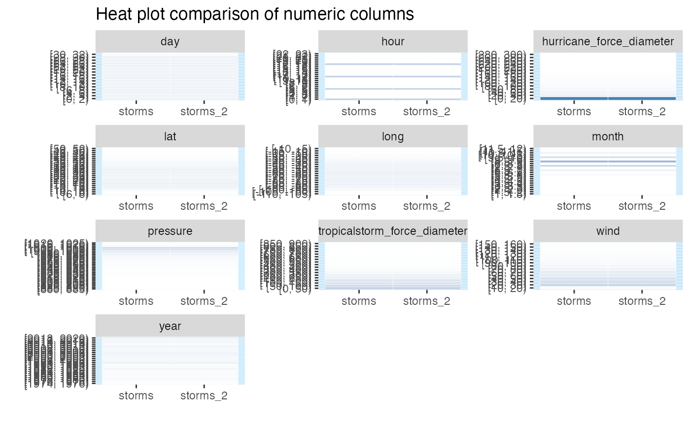

vignettes/pkgdown/inspect_num_examples.Rmd
inspect_num_examples.Rmdtdf
The examples below make use of the tdf and
storms data from the dplyr package
For illustrating comparisons of dataframes, use the
tdf data and produce two new dataframes
star_1 and star_2 that randomly sample the
rows of the original and drop a couple of columns.
inspect_num() for a single dataframe
inspect_num() combining some of the functionality of
summary() and hist() by returning summaries of
numeric columns. inspect_num() returns standard numerical
summaries (min, q1, mean,
median,q3, max, sd),
but also the percentage of missing entries (pcnt_na) and a
simple histogram (hist).
library(inspectdf)
inspect_num(storms, breaks = 10)## # A tibble: 10 × 10
## col_name min q1 median mean q3 max sd pcnt_na hist
## <chr> <dbl> <dbl> <dbl> <dbl> <dbl> <dbl> <dbl> <dbl> <named >
## 1 year 1975 1992 2002 2001. 2011 2020 12.0 0 <tibble>
## 2 month 1 8 9 8.78 9 12 1.26 0 <tibble>
## 3 day 1 8 16 15.8 24 31 8.94 0 <tibble>
## 4 hour 0 6 12 9.12 18 23 6.73 0 <tibble>
## 5 lat 7.2 17.5 24.6 24.8 31.3 51.9 8.51 0 <tibble>
## 6 long -109. -80.7 -64.4 -64.1 -48.4 -6 19.7 0 <tibble>
## 7 wind 10 35 45 53.6 65 160 26.2 0 <tibble>
## 8 pressure 882 985 999 992. 1006 1022 19.5 0 <tibble>
## 9 tropicals… 0 60 120 145. 210 870 126. 54.9 <tibble>
## 10 hurricane… 0 0 0 18.1 25 300 35.5 54.9 <tibble>The hist column is a list whose elements are tibbles
each containing the relative frequencies of bins for each feature. These
tibbles are used to generate the histograms when
show_plot = TRUE. For example, the histogram for
tdf$birth_year is
inspect_num(storms)$hist$pressure## # A tibble: 29 × 2
## value prop
## <chr> <dbl>
## 1 [880, 885) 0.0000843
## 2 [885, 890) 0.000169
## 3 [890, 895) 0.000422
## 4 [895, 900) 0.000253
## 5 [900, 905) 0.000506
## 6 [905, 910) 0.000928
## 7 [910, 915) 0.00110
## 8 [915, 920) 0.00253
## 9 [920, 925) 0.00312
## 10 [925, 930) 0.00371
## # … with 19 more rows
## # ℹ Use `print(n = ...)` to see more rowsA histogram is generated for each numeric feature by passing the
result to the show_plot() function:
inspect_num(storms, breaks = 10) %>%
show_plot()
inspect_num() for two dataframes
When comparing a pair of dataframes using inspect_num(),
the histograms of common numeric features are calculated, using
identical bins. The list columns hist_1 and
hist_2 contain the histograms of the features in the first
and second dataframes. A formal statistical comparison of each pair of
histograms is calculated using Fisher’s exact test, the resulting
p value is reported in the column fisher_p.
When show_plot = TRUE, heat plot comparisons are
returned for each numeric column in each dataframe. Where a column is
present in only one of the dataframes, grey cells are shown in the
comparison. The significance of Fisher’s test is illustrated by coloured
vertical bands around each plot: if the colour is grey, no p
value could be calculated, if blue, the histograms are not found to be
significantly different otherwise the bands are red.
inspect_num(storms, storms[-c(1:10), -1])## # A tibble: 10 × 5
## col_name hist_1 hist_2 jsd pval
## <chr> <named list> <named list> <dbl> <dbl>
## 1 year <tibble [23 × 2]> <tibble> 1.13e-5 1
## 2 month <tibble [22 × 2]> <tibble> 3.99e-6 1.00
## 3 day <tibble [16 × 2]> <tibble> 1.21e-6 1
## 4 hour <tibble [23 × 2]> <tibble> 9.25e-9 1
## 5 lat <tibble [23 × 2]> <tibble> 3.70e-7 1
## 6 long <tibble [21 × 2]> <tibble> 1.21e-6 1
## 7 wind <tibble [15 × 2]> <tibble> 2.73e-7 1.00
## 8 pressure <tibble [29 × 2]> <tibble> 1.33e-6 1
## 9 tropicalstorm_force_diameter <tibble [18 × 2]> <tibble> 0 1
## 10 hurricane_force_diameter <tibble [15 × 2]> <tibble> 0 1
inspect_num(storms, storms[-c(1:10), -1]) %>%
show_plot()